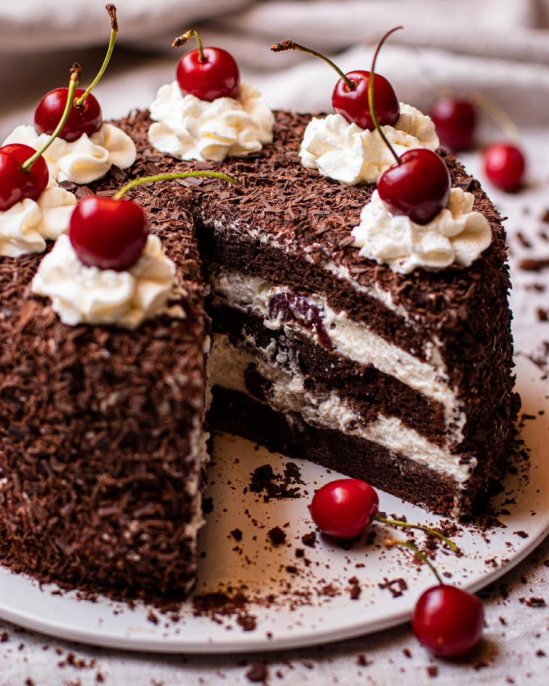

¡Bienvenidos a mi mundo!
Mi pasión por la cocina empezó de chiquita, gracias a mi mamá y mis abuelas,
que me inculcaron el oficio con mucho amor y dedicación. Desde que tengo
recuerdo soy acumuladora de recetas, y a los 12 años comencé a hacer mis primeras
tortas por encargo a familiares, amigos y vecinos del barrio.
Hoy en día, además de participar activamente en las recetas y administración general
de mis locales, intento llegar a todos los hogares compartiendo a través de mis redes
sociales todos mis secretos y conocimientos para que la gente haga y practique mis
recetas en sus casas, que van a poder encontrar en este sitio web.

Recetas para descubrir